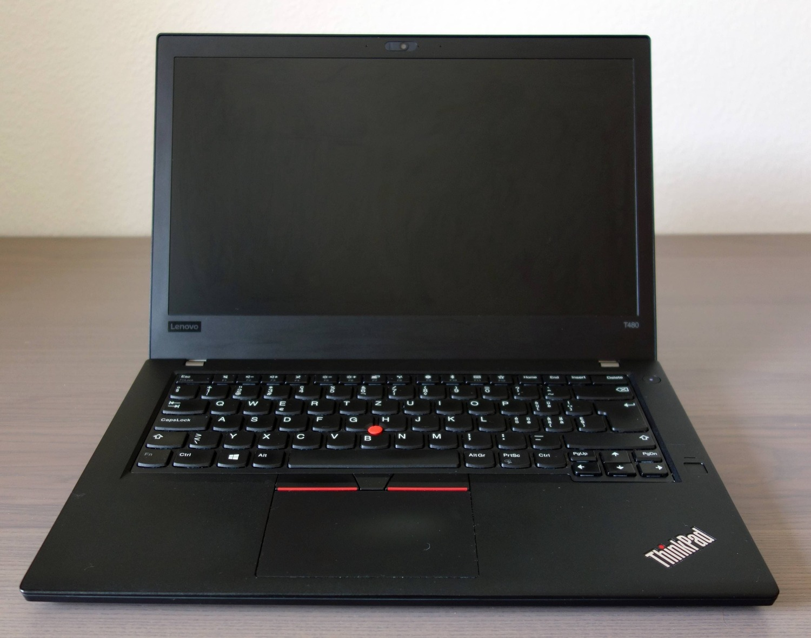
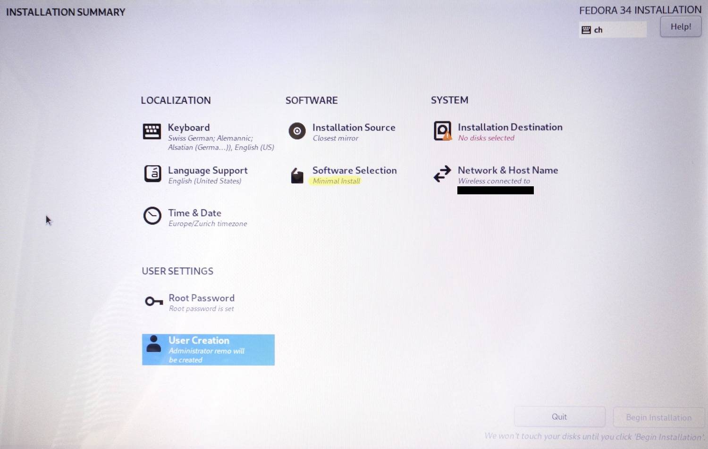

Today I will be installing a minimal Fedora 34 setup on my Lenovo T480.

Fedora is a linux distribution from Red Hat which I’ve been using for some years now. It’s a very stable distro with few bugs, and I like the minimalistic Gnome Desktop Environment. What I dont’t like is that a lot of software I don’t need comes preinstalled with the default Environment. The Fedora Installer offers different Base Environments though, differing in the amount of packages that are preinstalled. My prefered option is installing the minimal environment, and then adding any additional packages that I need.
Prerequisites
- A “target” machine to install Fedora to. In my case, a Lenovo T480.
- A VM or second machine running Fedora 34 for downloading packages for the target machine. This is needed because the minimal install doesn’t contain drivers for the wifi adapter! Packages will be downloaded on the VM and then transfered via USB stick to the target machine
- A USB stick for transfering the packages between VM and target machine.
Installation Process
-
Download the Fedora Server ISO and create a Live installation image using fedora media writer.
-
Press F12 during Boot to boot from the USB. The installation wizard will open.
-
After configuring my machine in the wizard, this is how it looks like.

-
Notice that I selected “Minimal Install” in the “Software Selection”.
-
After a successful installation I log in for the first time. At this point, there is no GUI installed, so all I see is the Linux Terminal and all I can do is issue commands into the shell.
Setting up an internet connection
Installing firmware
Because the minimal installation does not install any wireless firmware, we need to install the packages needed to create a wifi connection ourselves.
Check the current wifi status:
nmcli dev status
No device of type wifi shows up, which means I need to install firmware for my wifi card.
I’m switching to my VM now and download the driver for my wifi adapter from intels website. Then save the driver to my USB stick.
Back on my T480, i proceed with installing the driver:
Insert USB into T480. Check name of usb
lsblk
Create folder for mount point
mkdir usb
Mount usb
mount /dev/sda1 /home/remo/usb
Change into USB directory
cd /home/remo/usb/iwlwifi-i8265-ucode-22.361476.0
Copy the contents of the firmware directory to the /lib/firmware
sudo cp iwlwifi* /lib/firmware
Change to the root directory again
sudo cd /
Unmount the USB
sudo umount /dev/sda1
Reboot
sudo reboot
Installing Networking Packages
These packages will need to be downloaded from my VM to the USB Stick. They should enable networking for the T480.
iw
wireless-regdb
wpa_supplicant
NetworkManager-wifi
My USB Stick is mounted on my VM on `/run/media/remo/2033-4C6E``. I download the packages directly to the Stick with this command:
sudo dnf reinstall --downloadonly --downloaddir=/run/media/remo/2033-4C6E iw
sudo dnf reinstall --downloadonly --downloaddir=/run/media/remo/2033-4C6E wireless-regdb
sudo dnf reinstall --downloadonly --downloaddir=/run/media/remo/2033-4C6E wpa_supplicant
sudo dnf reinstall --downloadonly --downloaddir=/run/media/remo/2033-4C6E NetworkManager-wifi
After the packages are downloaded, I eject the USB from the VM and insert it into my T480. After mounting the USB at /home/remo/usb (see commands above) i proceed with the installation.
Change into USB directory
cd /home/remo/usb
Copy the packages to home
cp iw-5.9-2.fc34.x86_64.rpm ~
cp wireless-regdb-2020.11.20-2.fc34.noarch.rpm ~
cp wpa_supplicant-2.9-12.fc34.x86_64.rpm ~
cp NetworkManager-wifi-1.30.6-1.fc34.x86_64.rpm ~
Change to the home directory
cd /home/remo
Install the packages
sudo dnf --disablerepo=\* install iw-5.9-2.fc34.x86_64.rpm
sudo dnf --disablerepo=\* install wireless-regdb-2020.11.20-2.fc34.noarch.rpm
sudo dnf --disablerepo=\* install wpa_supplicant-2.9-12.fc34.x86_64.rpm
sudo dnf --disablerepo=\* install NetworkManager-wifi-1.30.6-1.fc34.x86_64.rpm
Important: The packages need to be installed in this order, because the latter packages depend on the first. E.g. NetworkManager-wifi needs wireless-regdb, wireless-regdb needs iw.
Unmount the USB and reboot.
After a reboot, I check the wifi again:
nmcli dev status
This time, my home network shows up
DEVICE TYPE STATE CONNECTION
wlp3s0 wifi connected Remos_HomeNetwork
p2p-dev-wlp3s0 wifi-p2p disconnected --
enp0s31f6 ethernet unavailable --
lo loopback unmanaged --
and I can connect to my wifi with this command
sudo nmcli dev wifi connect Remos_HomeNetwork password "network-password"
Now that we have internet connection, we can download the rest of the packages for the installation easily with the package manager. See you on part 2! 👋